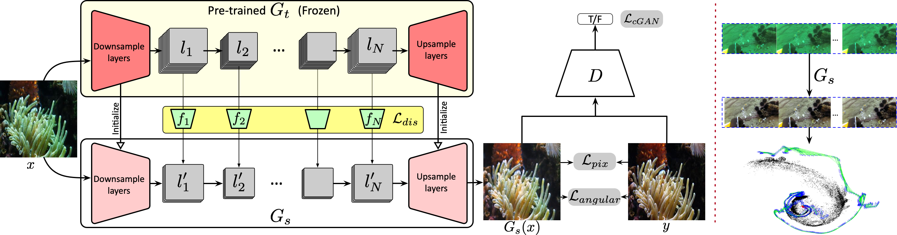

1The Hong Kong University of Science and Technology
2Ocean University of China
# Equal contribution
Frontiers in Marine Science 2023

Framework Overview of GAN-SLAM.
Abstract
Underwater monocular visual simultaneous localization and mapping (SLAM) plays a vital role in underwater computer vision and robotic perception fields. Unlike the autonomous driving or aerial environment, it is tough and challenging to perform robust and accurate underwater monocular SLAM due to the complex aquatic environment and the collected critically degraded image quality. The underwater images' poor visibility, low contrast, and color distortion result in ineffective and insufficient feature matching, leading to the poor or even failure of the existing SLAM algorithms. To address this issue, we propose to introduce the generative adversarial network (GAN) for performing effective underwater image enhancement before conducting SLAM. Considering the inherent real-time requirement of SLAM, we conduct knowledge distillation to achieve GAN compression to reduce the inference cost, while achieving high-fidelity underwater image enhancement and real-time inference meanwhile. The real-time underwater image enhancement acts as the image pre-processing to build a robust and accurate underwater monocular SLAM system. With the introduction of real-time underwater image enhancement, we can significantly promote underwater SLAM performance. The proposed method is a generic framework, which could be extended to various SLAM systems and achieve various scales of performance gain.
@article{zheng2023real,
title={Real-time GAN-based image enhancement for robust underwater monocular SLAM},
author={Zheng, Ziqiang and Xin, Zhichao and Yu, Zhibin and Yeung, Sai-Kit},
journal={Frontiers in Marine Science},
year={2023},
publisher={Frontiers Research Foundation}
}